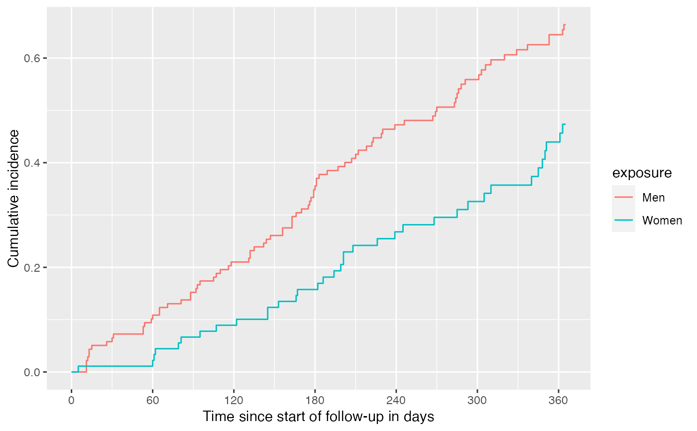
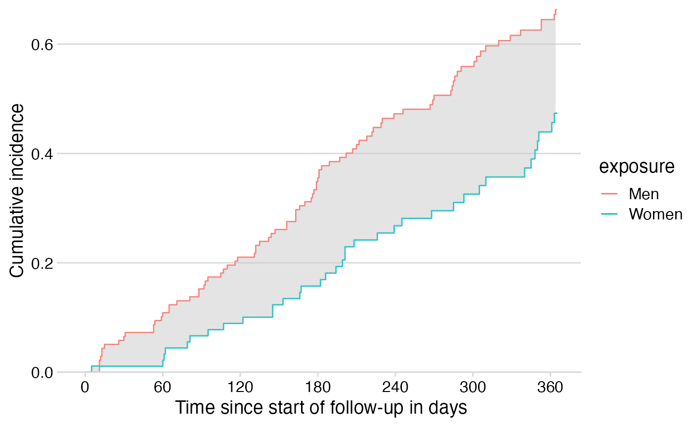

The method of Connor and Trinquart (Stat Med 2021) estimates the RMTL in the presence of competing risks. This function is a modification of their R code. Estimation functions are identical; input handling and output have been adapted.
estimate_rmtl(
data,
exposure = NULL,
time,
time2 = NULL,
event,
event_of_interest = 1,
weight = NULL,
tau = NULL,
reach_tau = c("warn", "stop", "ignore"),
conf.level = 0.95
)Data frame (tibble).
Optional. Name of exposure variable within the data.
If omitted, will return unstratified RMTL.
Name of time variable within the data. By default, this
is the event time. If time2 is also given, this is the entry time,
as per Surv standard.
Optional. Name of the variable within the data
indicating the exit (event) time. If omitted, time is the event
time, as per Surv standard.
Name of event variable within the data. Can be integer,
factor, character, or logical. The reference level indicates censoring and
is taken as the first level of the factor, the lowest numeric value
(usually 0), or FALSE for a logical variables. Other levels
are events of different types. If no competing risks, the alternative
level, e.g. 1, indicates the event (e.g., death).
Optional. Indicator for which of the non-censoring
events is of main interest. Others are treated as competing. Defaults to
1, i.e., the first non-censoring event.
Optional. Weights, such as inverse-probability weights or
survey weights. The default (NULL) uses equal weights for all
observations.
Optional. Time horizon to restrict event times. By default, the latest time in the group with the shortest follow-up. Prefer a user-defined, interpretable time horizon.
Optional. How to handle provided
tau values that are not reached in one of the exposure categories.
"warn" Default. Display a warning and estimate RMTL and its
difference in those exposure categories where tau is reached.
"stop" Stop with an error if tau not reached in one or more
of the exposure categories.
"ignore" Ignore exposure categories where tau is not
reached; estimate RMTL and its difference in those exposure categories
where tau is reached.
If tau is not reached in any of the exposure categories, the
function always stops with an error.
Optional. Confidence level. Defaults to 0.95.
List:
tau Time horizon.
rmtl Tibble with absolute estimates of RMTL, per exposure group if
given.
rmtdiff Tibble with contrasts of RMTL between exposure groups,
compared to a common reference (the first level). Empty tibble if no
exposure variable given.
cif Tibble with cumulative incidence function for the event of
interest:
exposure Exposure group.
time Event time.
estimate Aalen-Johansen estimate of cumulative incidence function
with se, conf.low, and conf.high.
Differences to the original function rmtl::rmtl():
Pass data as a data frame/tibble and select variables from it.
Allow for different variable types in the event variable.
Use Surv conventions for entry/exit times
(time, time2).
Allow for exposure groups where tau is not reached.
Return contrasts in restricted mean time lost as comparisons to the reference level instead of all pairwise comparisons.
Add origin (time 0, cumulative incidence 0) to the returned cumulative incidence function for proper plotting.
Return results as a list of tibbles. Do not print or plot.
Conner SC, Trinquart L. Estimation and modeling of the restricted mean time lost in the presence of competing risks. Stat Med 2021;40:2177–96. https://doi.org/10.1002/sim.8896.
data(cancer, package = "survival")
cancer <- cancer %>% dplyr::mutate(
status = status - 1, # make 0/1
sex = factor(sex, levels = 1:2, labels = c("Men", "Women")))
result <- estimate_rmtl(
data = cancer,
exposure = sex,
time = time,
event = status,
tau = 365.25) # time horizon: one year
result
#> $tau
#> [1] 365.25
#>
#> $rmtl
#> # A tibble: 2 × 5
#> exposure estimate se conf.low conf.high
#> <chr> <dbl> <dbl> <dbl> <dbl>
#> 1 Men 124. 10.4 103. 144.
#> 2 Women 67.7 10.8 46.5 88.8
#>
#> $rmtdiff
#> # A tibble: 2 × 6
#> exposure estimate se conf.low conf.high p.value
#> <chr> <dbl> <dbl> <dbl> <dbl> <dbl>
#> 1 Men 0 NA NA NA NA
#> 2 Women -56.0 15.0 -85.4 -26.7 0.000183
#>
#> $cif
#> # A tibble: 110 × 6
#> exposure time estimate se conf.low conf.high
#> <chr> <dbl> <dbl> <dbl> <dbl> <dbl>
#> 1 Men 0 0 NA NA NA
#> 2 Women 0 0 NA NA NA
#> 3 Men 11 0.0217 0.0124 -0.00259 0.0461
#> 4 Men 12 0.0290 0.0143 0.000995 0.0570
#> 5 Men 13 0.0435 0.0174 0.00945 0.0775
#> 6 Men 15 0.0507 0.0187 0.0141 0.0873
#> 7 Men 26 0.0580 0.0199 0.0190 0.0970
#> 8 Men 30 0.0652 0.0210 0.0240 0.106
#> 9 Men 31 0.0725 0.0221 0.0292 0.116
#> 10 Men 53 0.0870 0.0240 0.0399 0.134
#> # ℹ 100 more rows
#>
# Make simple plot
library(ggplot2)
library(dplyr)
#>
#> Attaching package: ‘dplyr’
#> The following objects are masked from ‘package:stats’:
#>
#> filter, lag
#> The following objects are masked from ‘package:base’:
#>
#> intersect, setdiff, setequal, union
library(tidyr)
result$cif %>%
ggplot(mapping = aes(x = time, y = estimate, color = exposure)) +
geom_step() +
scale_x_continuous(breaks = seq(from = 0, to = 365, by = 60)) +
labs(x = "Time since start of follow-up in days",
y = "Cumulative incidence")

# Make fancier plot with a shaded area for the RMTL difference
df_ribbon <- result$cif %>%
select(exposure, time, estimate) %>%
pivot_wider(names_from = exposure,
values_from = estimate,
names_repair = ~c("time", "surv", "surv2")) %>%
filter(time < 365.25) %>% # tau for RMST
arrange(time) %>% # carry forward survival values per stratum
fill(surv) %>%
fill(surv2)
result$cif %>%
ggplot() +
geom_step(mapping = aes(x = time, y = estimate, color = exposure)) +
scale_x_continuous(breaks = seq(from = 0, to = 365, by = 60)) +
scale_y_continuous(expand = expansion()) +
labs(x = "Time since start of follow-up in days",
y = "Cumulative incidence") +
cowplot::theme_minimal_hgrid() +
geom_stepribbon(data = df_ribbon,
mapping = aes(x = time, ymin = surv, ymax = surv2),
fill = "gray80", alpha = 0.5)
